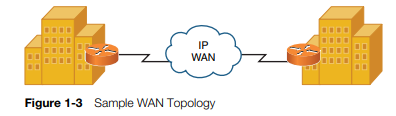

Categories of Network
- Local-area network (LAN)
- Wide-area network (WAN)
- Campus-area network (CAN)
- Metropolitan-area network (MAN)
- Personal-area network (PAN)
Networks Defined by Geography

As you might be sensing at this point, not all networks look the same. They vary in numerous ways. One criterion by which we can classify networks is how geographically dispersed the networks components are. For example, a network might interconnect devices within an office, or a network might interconnect a database at a corporate headquarters location with a remote sales office located on the opposite side of the globe.
Based on the geographical dispersion of network components, networks can be classified into various categories, including the following:
A LAN interconnects network components within a local region (for example, within a building). Examples of common LAN technologies you’re likely to encounter include Ethernet (that is, IEEE 802.3) and wireless networks (that is, IEEE 802.11). Figure 1-2 illustrates an example of a LAN.
A WAN interconnects network components that are geographically separated. For example, a corporate headquarters might have multiple WAN connections to remote office sites. Multiprotocol Label Switching (MPLS), Asynchronous Transfer Mode (ATM), and Frame Relay are examples of WAN technologies. Figure 1-3 depicts a simple WAN topology, which interconnects two geographically dispersed locations.
Other Categories of Networks
Although LANs and WANs are the most common terms used to categorize computer networks based on geography, other categories include campus-area network (CAN), metropolitan-area network (MAN), and personal-area network (PAN).
Years ago, I was a network manager for a university. The university covered several square miles and had several dozen buildings. Within many of these buildings was a LAN. However, those building-centric LANs were interconnected. By interconnecting these LANs, another network type was created, a CAN. Besides an actual university campus, a CAN might also be found in an industrial park or business park.
More widespread than a CAN and less widespread than a WAN, a MAN interconnects locations scattered throughout a metropolitan area. Imagine, for example, that a business in Chicago had a location near O’Hare Airport, another location near the Navy Pier, and another location in the Sears Tower. If a service provider could interconnect those locations using a high-speed network, such as a 10-Gbps (that is, 10 billion bits per second) network, the interconnection of those locations would constitute a MAN. One example of a MAN technology is Metro Ethernet.
A PAN is a network whose scale is even smaller than a LAN. As an example, a connection between a PC and a digital camera via a universal serial bus (USB) cable could be considered a PAN. Another example is a PC connected to an external hard drive via a FireWire connection. A PAN, however, is not necessarily a wired connection. A Bluetooth connection between your cell phone and your car’s audio system is considered a wireless PAN (WPAN). The main distinction of a PAN, however, is that its range is typically limited to just a few meters.
Networks Defined by Topology
In addition to classifying networks based on the geographical placement of their components, another approach to classifying a network is to use the network’s topology. Looks can be deceiving, however. You need to be able to distinguish between a physical topology and a logical topology.
Physical Versus Logical Topology
Just because a network appears to be a star topology (that is, where the network components all connect back to a centralized device, such as a switch), the traffic might be flowing in a circular pattern through all the network components attached to the centralized device. The actual traffic flow determines the logical topology , while how components are physically interconnected determines the physical topology .
As an example, consider Figure 1-4 . The figure shows a collection of computers connected to a Token Ring Media Access Unit (MAU). From a quick inspection of Figure 1-4 , you can conclude that the devices are physically connected in a star topology, where the connected devices radiate out from a centralized aggregation point (that is, the MAU in this example).
Figure 1-4 Physical Star Topology
Next, contrast the physical topology in Figure 1-4 with the logical topology illustrated in Figure 1-5 . Although the computers physically connect to a centralized MAU, when you examine the flow of traffic through (or in this case, around) the network, you see that the traffic flow actually loops round-and-round the network. The traffic flow dictates how to classify a network’s logical topology. In this instance, the logical topology is a ring topology , because the traffic circulates around the network as if circulating around a ring.
Figure 1-5 Logical Ring Topology
Although Token Ring, as used in this example, is rarely seen in modern networks, it illustrates how a network’s physical and logical topologies can be quite different.
Bus Topology
A bus topology, as depicted in Figure 1-6 , typically uses a cable running through the area requiring connectivity. Devices that need to connect to the network then tap into this nearby cable. Early Ethernet networks commonly relied on bus topologies.
Figure 1-6 Bus Topology
A network tap might be in the form of a T connector (commonly used in older 10BASE2 networks) or a vampire tap (commonly used in older 10BASE5 networks). Figure 1-7 shows an example of a T connector.
Figure 1-7 T Connector
NOTE The Ethernet standards mentioned here (that is, 10BASE2 and 10BASE5), in addition to many other Ethernet standards, are discussed in detail in Chapter 4 , “Understanding Ethernet.”
A bus and all devices connected to that bus make up a network segment . As discussed in Chapter 4 , a single network segment is a single collision domain, which means that all devices connected to the bus might try to gain access to the bus at the same time, resulting in an error condition known as a collision . Table 1-1 identifies some of the primary characteristics, benefits, and drawbacks of a bus topology.
Table 1-1
Characteristics, Benefits, and Drawbacks of a Bus Topology
| Characteristics | Benefits | Drawbacks |
|---|---|---|
| To maintain appropriate electrical characteristics of the cable, the cable requires a terminator (of a specific resistance) at each end of the cable. | Depending on the media used by the bus, a bus topology can be less expensive. | Troubleshooting a bus topology can be difficult because problem isolation might necessitate an inspection of multiple network taps to make sure they either have a device connected or they are properly terminated. |
| Bus topologies were popular in early Ethernet networks. | Installation of a network based on a bus topology is easier than some other topologies, which might require extra wiring to be installed. | Adding devices to a bus might cause an outage for other users on the bus. |
| Network components tap directly into the cable via a connector such as a T connector or a vampire tap. | An error condition existing on one device on the bus can impact performance of other devices on the bus. | |
| A bus topology does not scale well, because all devices share the bandwidth available on the bus. Also, if two devices on the bus simultaneously request access to the bus, an error condition results. |
Ring Topology
Figure 1-8 offers an example of a ring topology, where traffic flows in a circular fashion around a closed network loop (that is, a ring). Typically, a ring topology sends data, in a single direction, to each connected device in turn, until the intended destination receives the data. Token Ring networks typically relied on a ring topology, although the ring might have been the logical topology, while physically, the topology was a star topology.
Figure 1-8 Ring Topology
Token Ring, however, was not the only popular ring-based topology popular in networks back in the 1990s. Fiber Distributed Data Interface (FDDI) was another variant of a ring-based topology. Most FDDI networks (which, as the name suggests, have fiber optics as the media) used not just one ring, but two. These two rings sent data in opposite directions, resulting in counter-rotating rings . One benefit of counter-rotating rings was that if a fiber broke, the stations on each side of the break could interconnect their two rings, resulting in a single ring capable of reaching all stations on the ring.
Because a ring topology allows devices on the ring to take turns transmitting on the ring, contention for media access was not a problem, as it was for a bus topology. If a network had a single ring, however, the ring became a single point of failure. If the ring were broken at any point, data would stop flowing. Table 1-2 identifies some of the primary characteristics, benefits, and drawbacks of a ring topology.
Table 1-2
Characteristics, Benefits, and Drawbacks of a Ring Topology
| Characteristics | Benefits | Drawbacks |
|---|---|---|
| Devices are interconnected by connecting to a single ring, or in some cases (for example, FDDI), a dual ring. | A dual ring topology adds a layer of fault tolerance. Therefore, if a cable break occurred, connectivity to all devices could be restored. | A break in a ring when a single ring topology is used results in a network outage for all devices connected to the ring. |
| Each device on a ring includes both a receiver (for the incoming cable) and a transmitter (for the outgoing cable) | Troubleshooting is simplified in the event of a cable break, because each device on a ring contains a repeater. When the repeater on the far side of a cable break doesn’t receive any data within a certain amount of time, it reports an error condition (typically in the form of an indicator light on a network interface card [NIC]). | Rings have scalability limitations. Specifically, a ring has a maximum length and a maximum number of attached stations. Once either of these limits is exceeded, a single ring might need to be divided into two interconnected rings. A network maintenance window might need to be scheduled to perform this ring division. |
| Each device on the ring repeats the signal it receives. | Because a ring must be a complete loop, the amount of cable required for a ring is usually higher than the amount of cable required for a bus topology serving the same number of devices. |
Star Topology
Figure 1-9 shows a sample star topology with a hub at the center of the topology and a collection of clients individually connected to the hub. Notice that a star topology has a central point from which all attached devices radiate. In LANs, that centralized device was typically a hub back in the early 1990s. Modern networks, however, usually have a switch located at the center of the star.
Figure 1-9 Star Topology
The star topology is the most popular physical LAN topology in use today, with an Ethernet switch at the center of the star and unshielded twisted-pair cable (UTP) used to connect from the switch ports to clients.
Table 1-3 identifies some of the primary characteristics, benefits, and drawbacks of a star topology.
Table 1-3 Characteristics, Benefits, and Drawbacks of a Star Topology
| Characteristics | Benefits | Drawbacks |
|---|---|---|
| Devices have independent connections back to a central device (for example, a hub or a switch). | A cable break only impacts the device connected via the broken cable, and not the entire topology. | More cable is required for a star topology, as opposed to bus or ring topologies, because each device requires its own cable to connect back to the central device. |
| Star topologies are commonly used with Ethernet technologies. | Troubleshooting is relatively simple, because a central device in the star topology acts as the aggregation point of all the connected devices. | Installation can take longer for a star topology, as opposed to a bus or ring topology, because more cable runs that must be installed. |